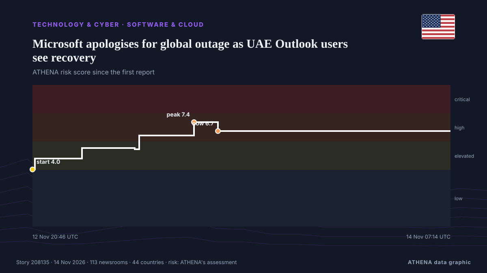

Software & cloud
SponsoredPresented by  Cybernetics and Artificial Intelligence Lab Welcome to the Cybernetics and Artificial Intelligence Laboratory, established at the Department of Business Administration of the National and Kapodistrian University of Athens. The lab is headed by Professor Dimitrios Thomakos. The lab aims to do research that can be published in top venues. Our research uses tools and methods of Artificial Intelligence, and lies in the following areas: - Forecasting - Decision making - Cyber security - Finance We are always looking forward to collaborating with exceptional students!
Cybernetics and Artificial Intelligence Lab Welcome to the Cybernetics and Artificial Intelligence Laboratory, established at the Department of Business Administration of the National and Kapodistrian University of Athens. The lab is headed by Professor Dimitrios Thomakos. The lab aims to do research that can be published in top venues. Our research uses tools and methods of Artificial Intelligence, and lies in the following areas: - Forecasting - Decision making - Cyber security - Finance We are always looking forward to collaborating with exceptional students!
| 1 Nov | 0 |
|---|---|
| 2 Nov | 0 |
| 3 Nov | 0 |
| 4 Nov | 0 |
| 5 Nov | 0 |
| 6 Nov | 0 |
| 7 Nov | 0 |
| 8 Nov | 0 |
| 9 Nov | 0 |
| 10 Nov | 3 |
| 11 Nov | 1 |
| 12 Nov | 4 |
| 13 Nov | 15 |
| 14 Nov | 1 |

Microsoft apologises for global outage as UAE Outlook users see recovery
UPDATED with latest company comments: Earlier this evening Microsoft posted an update on the outages to its 365 platform noting “positive results with our efforts to restart affected infrastructure… from Deadline
Queen: Assess data centres' impact on environment, communities
JOHOR BARU: Her Majesty Raja Zarith Sofiah, Queen of Malaysia, has called on the authorities, the private sector and the public to evaluate the impact of data centre development on the environment… from New Straits Times
Kenya Power issues emergency communication channels after Microsoft outage disrupts email services
Kenya Power has issued alternative communication channels for customers seeking assistance after a global Microsoft outage disrupted the utility company’s email services, temporarily affecting its… from People Daily
Microsoft Races to Fix Outlook in One of Its Longest Outages
Microsoft Corp. is struggling to restore access to its flagship software and end an outage that has paralyzed government offices, traders and businesses globally. from Insurance Journal
Microsoft reports progress in reviving email and other services during global outage
Microsoft said progress is being made in bringing its popular workplace software back online as a global outage enters its second day, disrupting business communications, police crime reporting… from The Korea Times
When Microsoft Takes a Day Off: A Wake-Up Call for Our Digital Dependence
If you’ve been on social media lately, chances are you’ve come across the conversations, memes and countless reactions surrounding the Microsoft outage. from KT Press
Rail firms warn of possible issues with emailed tickets after Microsoft outage
Companies are advising that customers log into their account to access tickets if they cannot locate them in email. from Evening Standard (London)
Greece Makes Data Centres Pay Host Communities €20,000 per MW
A new Greek law requires data centres to pay €20,000 per megawatt a year to the communities that host them, and to draw at least 60% of their power from renewables. from Greek City Times
Microsoft 365, Outlook, and Teams Hit by Global Outage Lasting Nearly 20 Hours
The global Microsoft outage continues to cause disruptions in several countries, as nearly 20 hours have passed since the first reports of service failures emerged. from Colombia One
When will Outlook and Microsoft 365 be back up? Tech giant says it’s seeing ‘signs of stabilisation’
Microsoft’s executive vice-president Charles Lamanna said the global outage problem is being worked on with ‘urgency’ from Evening Standard (London)
Faxes, phones and Bluetooth: Microsoft outage forces businesses to find fixes
Old-school technology including telephones, faxes and Bluetooth limited the damage for some people on Friday as a worldwide outage of Microsoft’s Outlook left millions without email. from Dawn
Microsoft crisis: What we know about the 365 outage
Microsoft has said that the fixes implemented to resolve the crisis have not worked as expected. from Arabian Business
Microsoft investigates reports of Outlook mailbox access problems
The outage is affecting Microsoft 365, including cloud-based services like Outlook and Cop. from BusinessDesk
Microsoft outage gums up markets, forces traders to use phones
“It’s been a bit of a disaster,” one Sydney-based bank executive said. from The Straits Times
Australia's cybersecurity chief investigating Microsoft outage
Australians are reporting that their businesses, government agencies and other organisations have been brought to a standstill as they wait to regain access to their email and other online systems. from ABC News Australia
MEPs pick apart Commission’s data centre sustainability scheme
Lawmakers attacked weak environmental rules and lack of attention to sovereignty. from Euractiv
Helsing launches Clarity, a European rival to Palantir’s Maven
German defence company Helsing has launched Clarity, a direct challenge to Palantir. from The Next Web
Ohio State University to migrate infrastructure to Microsoft Azure
Ohio State University and Microsoft signed a five-year partnership to move up to 80% of the university’s storage and computing to Azure, expand AI note-drafting at its Wexner Medical Center and build… from The Next Web
Delhi May See Cloud Seeding Today Amid 'Very Poor' AQI: Sources
Cloud seeding is the process of adding special substances like silver iodide and dry ice to clouds to make it rain or snow in areas experiencing water scarcity, less snowfall, or to reduce hail and… from NDTV